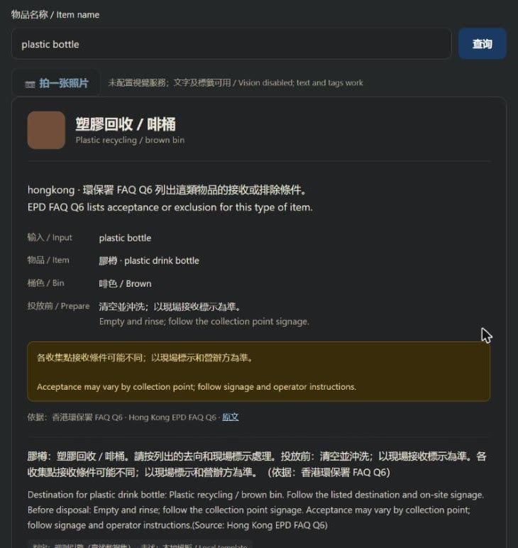
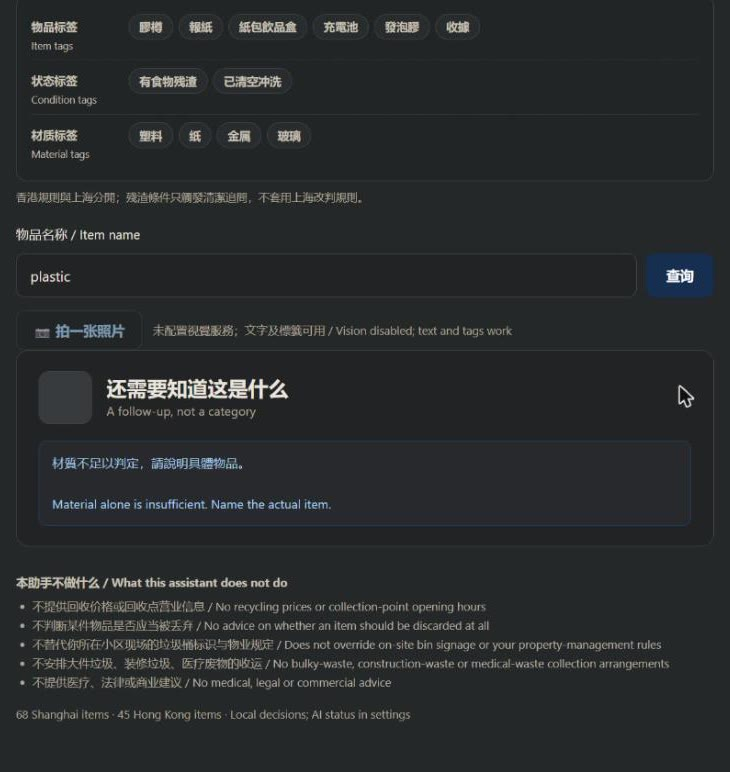

Who it is for and what problem it solves
Users
Students and residents who move between Shanghai and Hong Kong, for example HKU students studying at both campuses, and anyone who knows one city's rules but not the other's.
Problem
The same item goes into different bins in the two cities. A plastic bottle is blue "Recyclable Waste" in Shanghai but the brown plastics stream in Hong Kong. General chatbots blend the two systems and rarely say where a rule comes from.
What it does not do
- No recycling prices, collection-point addresses or opening hours.
- No decision on whether something should be thrown away at all, and no medical, legal or commercial advice.
- It does not replace the signs at your bins or your building's rules. Acceptance can differ between collection points.
How it works
Input → processing → output. Every step except the optional wording step is deterministic and runs offline with no API key.
膠 suggests 膠樽 · plastic drink bottle. Suggestions only fill the box after you click one. Nothing is submitted automatically.What our team built vs. what we reused
- Two city datasets (68 Shanghai + 45 Hong Kong entries), each with Chinese/English aliases, preparation, exceptions and source clause
- Shared CLI and web workflow, safe-failure rules and condition tags
- Bilingual autocomplete
- AI output guard that checks the facts and falls back to the template
- Test suites, held-out phrasing set and CSV export
- Python 3.10+ standard library: web server, JSON, unicode normalisation
- Optional: DeepSeek API (
deepseek-flash), only to choose a pre-written wording - Optional photo adapter for a vision model: suggests names only. Not evaluated with real photos.
- Official rule documents from the Shanghai and Hong Kong governments
Domain customisation
Four categories from the Shanghai Household Waste Sorting Guidelines (2024), Table 2. Milk cartons and disposable lunch boxes depend on whether there is a dedicated local collection, so the app asks before deciding.
Blue / yellow / brown recycling bins plus GREEN@COMMUNITY streams, each linked to its EPD FAQ question. An item that GREEN@COMMUNITY does not accept is not automatically sent to general waste. Special items point to official guidance.
A real run
Screenshots of the actual app running locally in offline mode (python src/app.py --offline), 18 November 2026. No API key was used and none of these are mock-ups.




Run it yourself
Requires Python 3.10+. The core app, tests and exporter use only the standard library, so there is nothing to pip install and no API key is needed.
git clone https://github.com/hryLiuYibo/AILT9019_Team11_Project.git
cd AILT9019_Team11_Project
python tests/run_tests.py # prints ALL PASS
python src/app.py --offline # then open http://localhost:8000Or use the command line:
python src/classify.py "plastic bottle" --city shanghai
python src/classify.py "plastic bottle" --city hongkong
python src/classify.py "milk carton" --city shanghai --tag cond_no_special_collection| City | Input | Expected output |
|---|---|---|
| Shanghai | plastic bottle | Recyclable Waste, blue; empty, rinse and flatten |
| Hong Kong | plastic bottle | Plastic recycling, brown; empty and rinse; follow signage |
| Hong Kong | milk carton | GREEN@COMMUNITY beverage-carton stream |
| Shanghai | milk carton | Asks whether a dedicated collection exists |
| Either | plastic | Asks for the actual item; no category |
| Either | rinsed + food residue tags | Conflict; no category |
The code repository is private to the team and the teaching team. If you are a classmate, the demo video shows the same workflow running end to end.
Evaluation results
Question: does the app give the sourced, city-correct destination for items it knows, and does it refuse or ask, instead of guessing, for everything else?
| Test | Result | What it shows |
|---|---|---|
| Shanghai baseline cases | 84 / 84 | Destination, refusal and unknown cases all as expected |
| Hong Kong cases | 99 pass | Independent HK dataset, no Shanghai rule borrowed |
| Tag / condition cases | 19 / 19 | Conditions change the result. Conflicts are refused. |
| Held-out phrasings, exact + top-3 autocomplete | 10 / 20 per city | Free-form wording coverage is limited (see below) |
| Held-out, after user picks the canonical name | 20 / 20 per city | Once the item is named, the decision is correct (controlled replay, not a user study) |
| Ambiguous / unknown inputs | 0 / 10 guessed | No unsafe automatic assignment |
| Live AI wording (DeepSeek) | 1 smoke test | One real query on 13 Nov 2026 kept all facts unchanged. Not a reliability test. |
Counts from tests/run_tests.py, tools/check_recording.py and tools/evaluate_recall.py, offline run on 13 November 2026. Some suites contain nested cases, so the rows should not be added together.
Failure cases and limitations
Observed failure: free-form wording
Only half of the held-out phrasings (10/20 per city) are found by exact lookup or the top-3 suggestions. A user who writes "used PET bottle from the vending machine" may get "not covered" even though "plastic drink bottle" is in the data. The cause is that we match exact names and aliases and do no fuzzy or semantic matching. We chose that on purpose, because a fuzzy match could quietly pick the wrong bin.
Possible next step: fuzzy candidates that are only suggested and never decided, tested on the same frozen held-out set.
Scope limits
- Only the 113 items in the datasets. Hong Kong food waste is not covered yet.
- Rules were checked against the official sources on 13 Nov 2026 and can change.
- The photo feature has zero real-photo evaluations. No recognition accuracy is claimed.
- No real user study has been run.
Ethics, data and AI use
- Data: public government pages only: the Shanghai 2024 sorting guidelines, the Shanghai official English FAQ, the HK EPD GREEN@COMMUNITY FAQ and the HK government note on recycling bin colours. No personal data is collected.
- Risk: a wrong answer could send an item to the wrong stream. Mitigations: every answer shows its source, the app asks instead of guessing, and the AI cannot change the decision.
- API keys are kept only in the page for that request. They are never written to disk or browser storage and are removed by Clear or a page refresh.
- Photos (optional) need explicit consent, have their metadata stripped before upload, and only produce suggested names.
- AI-assisted development: an AI coding assistant helped with implementation, tests, data structuring and documentation. Team members reviewed the sources, code and claims. Full disclosure is in Section 5 of the final report.
Team 11
AILT9019 AI Literacy for Computing and Data Science, The University of Hong Kong, 2026.